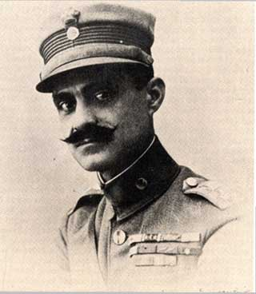

| Ο Νικόλαος Πλαστήρας γεννήθηκε το 1881 στην Καρδίτσα. Έλαβε μέρος στους Βαλκανικούς αγώνες (1912-1913) και στο μακεδονικό μέτωπο (1918) κατά τη διάρκεια του Α΄ Παγκοσμίου Πολέμου, όπου απέκτησε εξαιρετική φήμη στο στρατό για τη δράση του και ονομάστηκε "Μαύρος Καβαλάρης". Τις μεγάλες του στρατιωτικές ικανότητες έδειξε και στη Μικρασιατική εκστρατεία. Όταν άρχισε η κατάρρευση του μετώπου (Αύγ. 1922), η υποχώρηση της μονάδας του Πλαστήρα προς τα δυτικά παράλια της Μ. Ασίας έγινε με υποδειγματική τάξη και διέσωσε έτσι στρατιώτες διαλυμένων μονάδων από βέβαιη αιχμαλωσία καθώς και χιλιάδες πρόσφυγες από τη σφαγή, γεγονός που τον έκανε ιδιαίτερα αγαπητό στους πρόσφυγες.
Συμμετείχε στο στρατιωτικό κίνημα της Χίου - Μυτιλήνης (Σεπτ. 1922), το οποίο ανέτρεψε τη φιλοβασιλική κυβέρνηση, η οποία θεωρήθηκε υπεύθυνη της Μικρασιατικής καταστροφής, και υποχρέωσε τον βασιλιά Κωνσταντίνο Α΄ να εγκαταλείψει τη χώρα. Διετέλεσε πρωθυπουργός της χώρας τα έτη 1950-1952.
Ο Ν. Πλαστήρας πέθανε το έτος 1953.
|  |